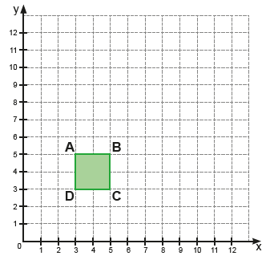
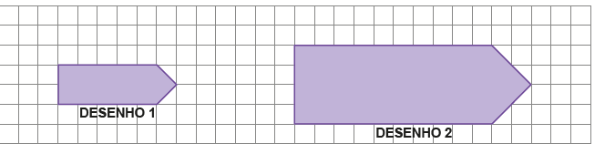
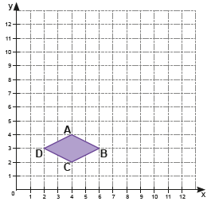

CAPÍTULO 6 - Ampliação e redução de figuras
Ampliação e redução de figuras planas na malha quadriculada
Observe o desenho abaixo.
![Desenho de uma malha quadriculada de sete linhas e dez colunas. Nela o desenho de um barco formado por três figuras geométricas em três cores. Em azul o casco do barco é um trapézio com a base menor que a parte de cima. As laterais estão em diagonal inclinadas para fora. Acima do casco, à esquerda em amarelo, um triângulo com o vértice apontado para baixo e para a direita. Do lado direito do triângulo amarelo, outro triângulo. De cor verde, ele tem o vértice apontado para baixo e para a esquerda.](../../resources/images/barco.PNG)
Um desenho como esse pode ser ampliado ou reduzido de tamanho. Para ampliarmos ou reduzirmos é importante observar que todas as medidas da figura precisam aumentar ou diminuir proporcionalmente para que a figura não seja deformada. Dessa forma, obtém-se uma figura semelhante.
Com o apoio de uma malha quadriculada, veja como podemos ampliar esse desenho.
O desenho acima é uma ampliação do desenho anterior. Suas medidas foram multiplicadas por 2.
122
UNIDADE 3 - CAPÍTULO 6
Agora, vamos verificar como podemos reduzir uma figura usando uma malha quadriculada.
Para reduzirmos a figura acima em 4 vezes, vamos dividir cada uma das medidas dos lados da figura por 4. Observe:
UNIDADE 3 - CAPÍTULO 6
123
Ampliação e redução de figuras planas no plano cartesiano
Podemos construir uma figura plana no plano cartesiano indicando as coordenadas dos seus vértices. Observe o quadrado abaixo de coordenadas A(3, 5), B(5, 5), C(5, 3) e D(3, 3).
Para ampliarmos esse quadrado, basta multiplicarmos suas coordenadas por um mesmo número, sendo este número maior que 1.
Vamos ampliar o quadrado acima multiplicando todas as suas coordenadas por 2. Assim, teremos um novo quadrado ampliado de coordenadas E(6, 11), F(10, 11), G(10, 7) e H(6, 7).

Assim como podemos ampliar uma figura plana no plano cartesiano, é possível fazer uma redução. Neste caso, devemos dividir todas as coordenadas por um número maior que 1.
124
UNIDADE 3 - CAPÍTULO 6
No plano cartesiano abaixo temos o triângulo de vértices M(6, 12), N(6, 6) e O(12, 6).

Vamos reduzi-lo dividindo todas as suas coordenadas por 3. Dessa forma, teremos um novo triângulo QRS de coordenadas Q(2, 4), R(2, 2) e S(4, 2).

ENCONTRE SOLUÇÕES
1. Observe os desenhos 1 e 2 na malha quadriculada abaixo. Podemos afirmar que o desenho 2 é uma ampliação do desenho 1? Justifique sua resposta.
UNIDADE 3 - CAPÍTULO 6
125
2. Em uma malha quadriculada, faça a redução da figura abaixo e, em seu caderno, justifique como realizou a redução.
![Uma malha quadriculada com o desenho de uma figura formada por quatro retângulos, ocupando cada um, 18 quadrados. São dois retângulos, à esquerda, e mais dois, à direita. Os da esquerda formam o número sete com um retângulo na horizontal na cor laranja clara e o outro laranja escuro na vertical. Os retângulos da esquerda formam a letra L com um retângulo na vertical laranja escuro e o outro na horizontal laranja claro. Os retângulos da esquerda estão localizados três andares acima dos retângulos da direita.](../../resources/images/malha.PNG)
3. Em um papel quadriculado, construa um plano cartesiano e faça a ampliação do polígono ABCD abaixo. Escreva em seu caderno as coordenadas do polígono ABCD e do polígono ampliado, justificando a sua resposta.
4. Considere um polígono de coordenadas M(14, 8), N(10, 6) e O(8, 10). Podemos afirmar que um polígono de coordenadas A(7, 4), B(5, 3) e C(2, 5) é uma redução do polígono MNO? Justifique a sua resposta.
5. Em um papel quadriculado, construa um plano cartesiano e faça a redução do polígono ABCDEFGH. Escreva em seu caderno as coordenadas do polígono abaixo e do polígono reduzido, justificando a sua resposta.
![Figura de um plano cartesiano. Ele possui dois eixos: o x, na horizontal, e o y, na vertical. O eixo x é dividido em 12 partes e o y também em 12 partes. No plano cartesiano o desenho de um polígono amarelo no formato da letra C, a partir da união das coordenadas: A, B, C, D, E, F, G, H. A letra A está no ponto 6 do eixo x e 12 do eixo y. A letra B está no 12 do x e 12 do y. A letra C, 12 do x e 9 do y. A letra D, 9 do x e 8 do y. A letra E, 9 do x, 6, do y. A letra F, 12 do x e 6 do y. A letra G, 12 do x e 3 do y. A letra H, 6 do x e 3 do y.](../../resources/images/hbag.PNG)
126
UNIDADE 3 - CAPÍTULO 6
PROBABILIDADE E ESTATÍSTICA
► Educação no trânsito
![Figura de um plano cartesiano. Ele possui dois eixos: o x, na horizontal, e o y, na vertical. O eixo x é dividido em 12 partes e o y também em 12 partes. No plano cartesiano o desenho de um polígono amarelo no formato da letra C, a partir da união das coordenadas: A, B, C, D, E, F, G, H. A letra A está no ponto 6 do eixo x e 12 do eixo y. A letra B está no 12 do x e 12 do y. A letra C, 12 do x e 9 do y. A letra D, 9 do x e 8 do y. A letra E, 9 do x, 6, do y. A letra F, 12 do x e 6 do y. A letra G, 12 do x e 3 do y. A letra H, 6 do x e 3 do y.](https://i.ibb.co/vwGLcbT/img-nav.png)
Observe a seguir alguns gráficos que trazem informações que demons-tram o total de internações por causas externas no estado de Minas Gerais.
Gráfico A - Distribuição das internações hospitalares no SUS Geral, segundo categoria. Minas Gerais, 2010 a 2021*.
![Gráfico de barras verticais com o título “Distribuição das internações hospitalares no SUS Geral, segundo categorias. Minas Gerais, 2010 a 2021”. O gráfico é composto por dois eixos: um à esquerda com o título “Quantidade de internações”. O eixo é vertical e está numerada desde a base pelos números: 0, 20 mil, 40 mil, 60 mil, 80 mil, 100 mil, 120 mil. O segundo eixo está na horizontal, na base do gráfico com o título “Meios de Transporte”. São cinco pares de barras verticais nas cores azul e laranja. Azul representa os homens e Laranja, as mulheres. No primeiro par, nomeado de “a pé”, 32 mil 779 são homens e 16 mil 171 mulheres. O segundo par é “Bicicleta”, sendo 17 mil 249 homens, e 3 mil 432 mulheres. O terceiro par é ”motocicleta”, 99 mil 554 homens e 16 mil 990 mulheres. O quarto par é “automóvel”, 2 ml e sete homens e 8 mil 276 mulheres. O quinto par é “outros”, sendo 18 mil 647 homens e 5 mil 133 mulheres. No canto inferior esquerdo: Fonte: Ministério da Saúde – Sistema de informações hospitalares do SUS (SIH/SUS). *Dados retirados em 24 de maio de 2021.](../../resources/images/intema.PNG)
1. Converse com um colega e, em seus cadernos, escrevam um texto rela-tando as informações que aparecem no gráfico A.

UNIDADE 3 - CAPÍTULO 6
127

2. Converse com um colega e, em seus cadernos, escrevam um texto rela-tando as informações que aparecem no gráfico B.
Gráfico B - Distribuição das internações hospitalares no SUS Geral Acidentes de Transporte Terrestre, segundo faixa etária.
Minas Gerais, 2010 a 2021*.
![Gráfico de barras verticais com o título “Gráfico B – Distribuição das internações hospitalares no SUS Geral Acidentes de Transporte Terrestre, segundo faixa etária. Minas Gerais, 2010 a 2021*.” O gráfico é composto por dois eixos: um à esquerda com o título “Quantidade de internações”. O eixo é vertical e está numerada desde a base pelos números: zero, 10 mil, 20 mil, 30 mil, 40 mil, 50 mil, 60 mil, 70 mil, 80 mil. O segundo eixo está na horizontal, na base do gráfico com o título “Faixa Etária”. São 12 barras verticais verdes: “Menor de um ano” corresponde a 407 internações. “1 a 4 anos” 2.562. “5 a 9 anos” 5.635. “10 a 14 anos” 8.571. “15 a 19 anos” 24.465. “20 a 29 anos” 67.279. “30 a 39 anos” 48.344. “40 a 49 anos” 35.483. “50 a 59 anos” 24.166. “60 a 69 anos” 12.434. “70 a 79 anos” 6.543. “80 anos ou mais” 3.349. No canto inferior esquerdo: Fonte: Ministério da Saúde – Sistema de informações hospitalares do SUS (SIH/SUS). *Dados retirados em 24 de maio de 2021.](../../resources/images/intema2.PNG)
Faixa etária
3. Troque ideias com seu colega, façam uma pesquisa e escrevam
suges-tões de práticas saudáveis no trânsito para pedestres,
passageiros, ciclistas, motociclistas e motoristas.
RELEMBRE
1. Nas situações a seguir, escreva, em seu caderno, se elas nos dão ideia de ponto, reta ou plano.
a) Um grão de areia.
b) A superfície do mar calmo.
c) O horizonte.
2. Observe as retas a seguir. Quais retas são paralelas? Quais retas são concorrentes?

3. Leia as afirmações a seguir e escreva, em seu caderno, V para as afirmações verdadeiras e F para as falsas, corrigindo as que forem falsas.
a) Um ângulo agudo mede 90º.
b) Um ângulo é formado por semirretas.
c) Um ângulo pleno é um ângulo que mede 180º.
d) O instrumento utilizado para medir um ângulo é o esquadro.
e) Um ângulo obtuso é um ângulo que mede mais que 90º e menos que 180º.
f) Um ângulo raso mede o dobro da medida de um ângulo reto.
128
UNIDADE 3 - CAPÍTULO 6
RELEMBRE
4. Observe os triângulos na malha quadriculada a seguir. Em seu caderno, classifique cada um deles de acordo com a medida de seus lados e de seus ângulos.
![Na malha quadriculada, cinco triângulos nomeados de A, B, C, D, E. O triângulo da letra A é amarelo. Ele ocupa na base 3 quadrados e nas laterais em diagonal passam por três quadrados. O triângulo B é verde. Ele ocupa na base 3 quadrados, a lateral esquerda diagonal passa por três quadrados. A lateral direita é uma linha na vertical no tamanho de três quadrados. O triângulo C é branco. Ele ocupa na base 4 quadrados e nas laterais em diagonal tem a altura de três quadrados. O triângulo D é azul. Ele ocupa na base quatro quadrados. A lateral esquerda é uma linha vertical com a altura de dois andares. A lateral direita liga-se à esquerda em diagonal. O triângulo E tem na base o tamanho de três quadrados. A lateral esquerda é uma diagonal e passa por dois quadrados em direção à esquerda da malha. A lateral direita também é uma diagonal voltada para a esquerda.](../../resources/images/r1.PNG)
5. Na malha quadriculada a seguir foram representados alguns quadriláteros. Em seu caderno, escreva o nome de cada um deles.
![Na malha quadriculada, seis quadriláteros, nomeados de A, B, C, D, E, F. O quadrilátero da letra A é branco. Ele ocupa na base e na parte superior três quadrados. As laterais têm a altura de dois quadrados. O B é laranja tem na base o tamanho de 3 quadrados. A parte superior é menor que a base. As laterais se ligam da base a parte superior em diagonais. O C, em azul, tem a forma de um quadrado inclinado à direita. O D, em branco, tem a base maior que a parte de cima. A lateral esquerda é uma linha na vertical. A lateral direita é uma diagonal inclinada para a esquerda. O E, em amarelo, é a união de dois triângulos: um em cima e o outro embaixo. O de cima tem o vértice para cima e o de baixo o vértice para baixo. O F, em verde, tem quatro lados iguais, cada um ocupando dois quadrados.](../../resources/images/r2.PNG)
6. Utilizando 24 palitos de fósforo Marcos construiu 6 quadrados congruentes como mostra a figura.

► Agora é a sua vez! Utilizando a mesma quantidade de palitos, em dupla, construam uma figura com 7 quadrados congruentes e depois outra com 8 quadrados congruentes.
7. Desenhe, em seu caderno, a próxima figura desta sequência.

8. (Saresp) Observe a tabela abaixo e veja como ela foi organizada. O espaço destinado a figuras quadrangulares vermelhas é:

a) I
b) II
c) III
d) IV
9. Agora vamos montar um quadrado utilizando 4 peças iguais a esta.

► Nos anexos você encontrará as peças que precisa para montar o quadrado. Reproduza-as e divirta- se.
UNIDADE 3 - CAPÍTULO 6
129
10. Escreva em seu caderno as coordenadas dos pontos indicados no plano cartesiano.

11. Na malha quadriculada temos desenhadas as figuras I e II. Podemos afirmar que a figura II é uma redução da figura I? Justifique sua resposta.

12. Você sabe o que é sinalização de trânsito?
O Código de Trânsito Brasileiro define sinalização de trânsito como sendo um conjunto de sinais de trânsito e dispositivos de segurança colocados na via pública com o objetivo de garantir sua utilização adequada, possibilitando melhor fluidez no trânsito e maior segurança dos veículos e pedestres que nela circulam.
a) Em sua opinião, a sinalização no trânsito é respeitada?
b) O que poderia ser feito para evitar que ocorram tantos acidentes de trânsito no Brasil?
c) A seguir, temos representadas algumas placas de trânsito que nos lembram alguns polígonos. Escreva, em seu caderno, o que significa cada placa e o nome do polígono que cada uma delas nos lembra.
![Quatro placas duas em cima e duas abaixo. A primeira em cima e à esquerda tem seis lados iguais e a cor é vermelha. No centro dela em branco: Pare. A segunda placa à direita tem a cor bordô. No centro dela o desenho de uma pessoa pescando em um rio. Abaixo do desenho: Pesca Esportiva. Abaixo à esquerda, uma placa bordô. No centro o desenho de um ônibus. Abaixo de desenho: Terminal Rodoviário. A quarta placa à esquerda e abaixo tem a forma de um triângulo com o vértice apontado para baixo. Ele tem uma borda grossa vermelha e o centro é um triângulo invertido na cor branca.](../../resources/images/r8.PNG)
UNIDADE 3 - CAPÍTULO 6
130
13. (Saresp) Dentre os mosaicos abaixo, aquele que é formado somente por quadriláteros é:
a)

b)

c)

d)

UNIDADE 3 - CAPÍTULO 6
131